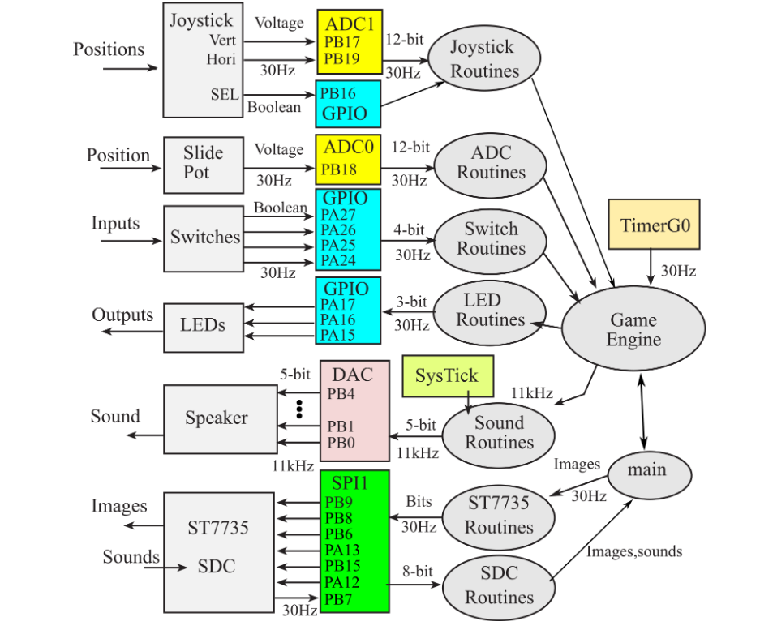

// gameplay running on the assembled custom PCB
The story
UT Austin's ECE 319K (UT's intro embedded systems course) builds toward one thing: building a handheld video game from scratch. Most teams do the standard Space Invaders. My partner Pranav and I wanted a game we both loved from childhood, so we built Donkey Kong, reimagined as a fast-pace high-score challenge.
I recreated the five-level game board and implemented the gameplay from the ground up: randomized barrel paths, Mario movement using an ADC-controlled slide potentiometer, pushbuttons for jumping, climbing, and pausing, interrupt-driven sound effects, animated menus, and full Spanish-language support.
To go beyond the course requirements, we designed and assembled a custom PCB, transforming the project from a breadboard prototype into a fully handheld game.
What it does
- Five-level platform stage with ladders, fall-through gaps, and an instant-death pit
- Up to 10 barrels rolling simultaneously, each on one of four pre-computed paths chosen randomly at spawn
- Table-driven jump physics: jump height and timing are tunable data, not hard-coded physics
- Randomly spawning collectable bananas
- 3 lives, score, pause, and an animated game-over screen
- Bilingual UI (English / Spanish) selected from the title screen via slide potentiometer
- DAC sound effects on jump, coin pickup, and death
System Architecture
Three interrupt timers drive the game independently of the render loop:
| Timer | Rate | Responsibility |
|---|---|---|
| TIMG12 | 30 Hz | game engine tick — animation frames, score, banana timer, barrel spawning |
| TIMG0 | 30 Hz | barrel path stepping |
| SysTick | 11 kHz | DAC sound output — sample-by-sample audio |

// system block diagram (course-provided architecture): every peripheral, pin, and routine
The key discipline: ISRs only mutate state, all SPI display output happens in main. That keeps slow SPI traffic out of interrupt context, so the game logic never stutters. Rendering is dirty-rect based: the hero is erased and redrawn only when his coordinates change, and barrels repaint only when the path ISR raises a flag. Over a slow SPI display, that discipline is the difference between smooth and slideshow.
When the game is paused, both gameplay ISRs immediately return, making pause effectively free from a CPU perspective.
From breadboard to board
The project began on a breadboard using a LaunchPad before being migrated to a custom PCB featuring an MSPM0G3507, ST7735 TFT, pushbuttons, slide potentiometer, and binary-weighted DAC for audio output.
// early board creation on the breadboard prototype: LaunchPad, jumpers, and all

// the final board, populated: buttons, slide pot, audio jack, LEDs: UT crest on the silkscreen